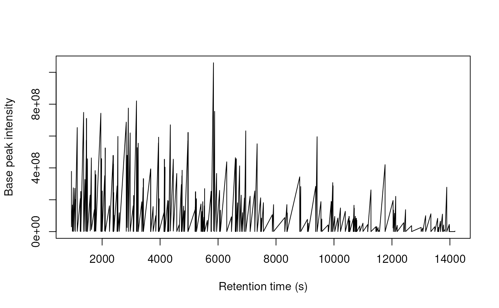

spBoekweg is a Spectra object containing 4,766 mass spectra
(MS1 and MS2) that are linked to peptide identifications in the
psmBoekweg dataset.
A Spectra object with 4,766 spectra stored in memory using
MsBackendMemory(). The spectra contain standard metadata
variables including:
msLevelMS level (1 or 2)
rtimeRetention time (seconds)
precursorMzPrecursor m/z (MS2 only)
precursorChargePrecursor charge (MS2 only)
dataOriginSource file name
spectrumIdSpectrum identifier
This is an example subset of the data available through
?MsDataHub::Boekweg2022().
The spectra can be linked to the psmBoekweg dataset using a
common key based on the file name and scan number. See the vignette
validatePSM for an example.
psmBoekweg for the corresponding PSM object with peptide
identifications.
Spectra::Spectra() for the Spectra class from the Spectra
package.
The inst/scripts/make_BoekwegData.R script documenting data
creation.
data(spBoekweg)
spBoekweg
#> MSn data (Spectra) with 348 spectra in a MsBackendMemory backend:
#> msLevel rtime scanIndex
#> <integer> <numeric> <integer>
#> 1 1 941.689 6404
#> 2 2 941.825 6405
#> 3 1 976.998 6833
#> 4 2 977.806 6843
#> 5 1 1008.215 7218
#> ... ... ... ...
#> 344 2 13980.1 138534
#> 345 1 13980.3 138536
#> 346 2 13981.8 138545
#> 347 1 14171.3 139922
#> 348 2 14173.0 139932
#> ... 35 more variables/columns.
#> Processing:
#> Switch backend from MsBackendMzR to MsBackendMemory [Tue Nov 10 11:00:30 2026]
## Number of spectra
length(spBoekweg)
#> [1] 348
## MS levels
table(spBoekweg$msLevel)
#>
#> 1 2
#> 173 175
## Retention time range (in seconds)
range(spBoekweg$rtime)
#> [1] 941.6894 14172.9858
## Plot base peak chromatogram
plot(spBoekweg$rtime, spBoekweg$basePeakIntensity,
xlab = "Retention time (s)", ylab = "Base peak intensity",
type = "l")

## Link to PSM data using a common key
data(psmBoekweg)
psmBoekweg$pkey <- paste0(
basename(psmBoekweg$filename),
sub("^.+scan=", "::", psmBoekweg$scannr)
)
spBoekweg$pkey <- paste0(
basename(spBoekweg$dataOrigin),
sub("^.+scan=", "::", spBoekweg$spectrumId)
)
## Find spectra with identifications
sum(spBoekweg$pkey %in% psmBoekweg$pkey)
#> [1] 175